Construindo sistemas rápidos, seguros e escaláveis.
Me chamo João Pedro Gerotto Fernandes e sou graduado em Análise e Desenvolvimento de Sistemas pela FATEC Mogi das Cruzes (2025). Atuo como Desenvolvedor Full Stack, com foco no ecossistema .NET, desenvolvendo aplicações web, APIs REST e sistemas escaláveis.
Tenho experiência no desenvolvimento de soluções utilizando C#, ASP.NET Core, TypeScript, SQL Server, Oracle, MySQL, Docker, Redis e AWS. Ao longo da minha trajetória, participei da criação de APIs, integrações entre sistemas, autenticação com JWT, otimização de consultas SQL, desenvolvimento de procedures, triggers e modelagem de bancos de dados, sempre aplicando boas práticas como Clean Code, SOLID e arquitetura em camadas.
Sou autor do artigo científico "Segurança em Banco de Dados: Estratégias de Prevenção e Mitigação de Injeção SQL", no qual abordo técnicas de proteção contra ataques de SQL Injection, apresentando estratégias para aumentar a segurança e a confiabilidade de aplicações e ambientes de banco de dados.
Também possuo experiência na construção de dashboards analíticos com Power BI, utilização de Git para controle de versão e metodologias ágeis como Scrum. Busco constantemente aprimorar meus conhecimentos e entregar soluções que aliem desempenho, segurança e uma excelente experiência para os usuários.